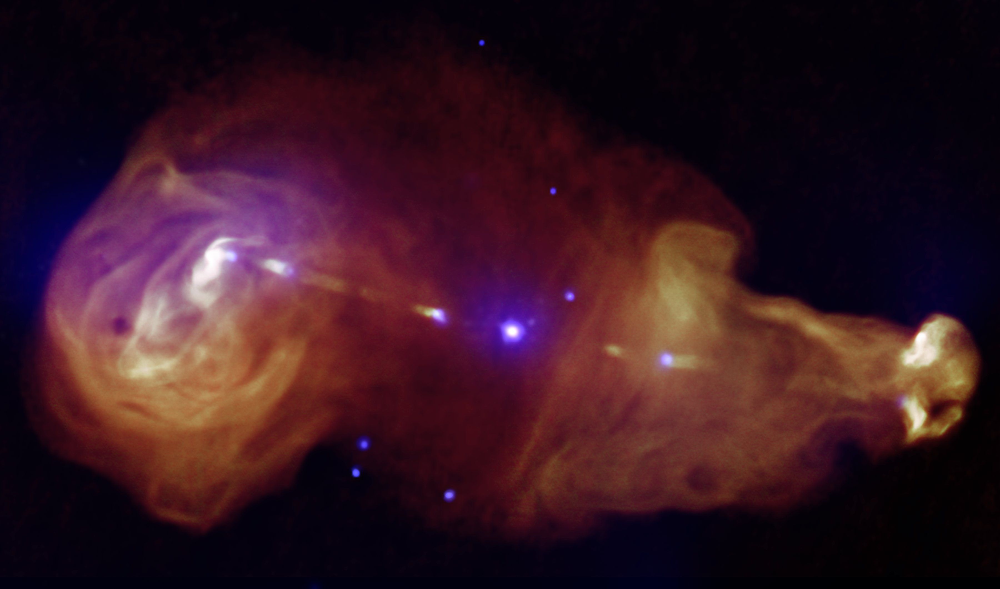
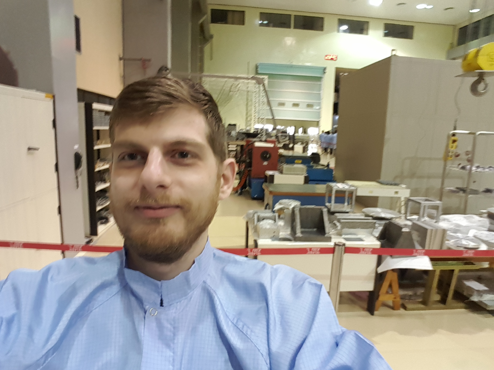

Adam Harvey
Interesting stuff to be added here eventually.

I am a PhD student at the University of Maryland, Baltimore County, studying blazars and the extragalactic backround light. My research involves statistical analysis, scientific computing, and Fermi-LAT analysis.
Some ancillary interests include machine learning, web design, education, particle physics, numerical optimization, writing, photography, cooking, and music.
The picture above is of me visiting a testing facility at the Brazilian Institute of Space Research (INPE). The visit was organized for the São Paulo School of Advanced Science on High Energy and Plasma Astrophysics in the CTA Era which I attended in June.